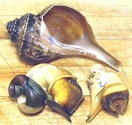
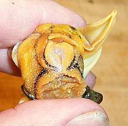
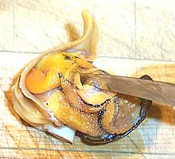
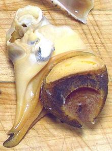
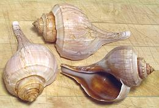

|

Removed from shell

Finding the mouth (Kellet's whelk shown)

Splitting the gut (Kellet's whelk shown)

Recipe Ready
|
|
- Let your whelks relax for a while, then check them to make sure they're
alive. If you poke them they should respond by pulling tighter into their
shells. Discard any dead ones and scrub the live ones under cold running
water with a stiff brush to remove extraneous muck and miscellaneous
sea life.
- Let the whelks relax while you boil up a big pot of salted water, then
toss them in and bring it back up to a boil as quickly as possible. Once
it's back to a boil let them cook for about 15 minutes.
- Cool the whelks in cold water until you can handle them easily. you
can use any appropriate tool to get under the operculum (the hard door
that closes after the snail) and pull it out of the shell. The whole snail
may come out intact, or the edible part may break off leaving the rest
in the shell. The photo to the left shows the complete contents of the
shell (left) and just the edible parts (right).
- Under cold running water wash out any gooky stuff. Rubbery stuff is all
edible including siphons, but gooky parts are not.
- Find the whelk's mouth. It's right between two short tentacles. The
photo shows the operculum below, the foot facing you and the mouth just
above the foot. Now insert your filleting knife into the mouth sharp side
up and split the gut open so you can wash out the last of the gooky stuff.
- Pull off the operculum and you should now have a nice clean and edible
hunk of whelk. In general it's not so tough as to need pounding unless you
want it extra tender.You can eat it immediately or freeze for later.

These shells can be attractive if cleaned up.
1. Cook your snails and remove the meat for whatever use you
have in mind.
2. Return the shells to the pot and cover well with water. Bring
to a boil and simmer for a long time. Occasionally tilt them pointy end down
under the water to fill them.
3. Cool and drain. Shake the crud out by this means. Hold the
shell pointy end down and fill with hot water. Turn pointy end up and shake
up and down vigorously. Repeat until you're sure all the crud has been
shaken out.
4. Scrub the shells with a stiff bristle brush and by whatever
other means you have, until they are clean.
4. Return to the pot and cover with water. Add bleach to about
20% of the liquid. Turn the shells pointy end down under water to fill them.
5. Bring to a boil and simmer until they are a nice color.
6. Rub them with mineral oil to keep them bright and preserve
the colors.
|